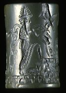
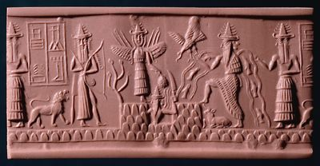

The Challenge -

Seal showing gods
This seal shows four of the main gods of Mesopotamia. They are Shamash, Ishtar, Ea with his official Usmu who has two faces, and a hunter god, perhaps Ninurta. The cuneiform signs tell us that the seal belonged to a scribe called Adda.
To learn more about gods visit the Gods Explore.
|
|